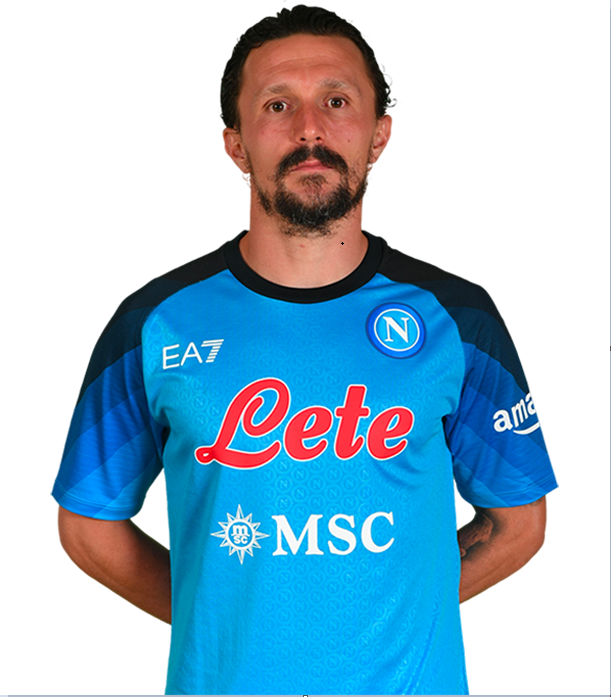

Personal Information
Name: Mário Rui
Birthdate: May 27, 1991
Nationality: Italian
Height: 173 cm (5 feet, 8 inches)
Position: Left-Back | #6
About The Player
Mário Rui is an Italian professional footballer who plays as a left-back for the Italian Serie A club Napoli and the Portugal national team. Born on May 27, 1991, in Portugal, Rui began his professional career at the age of 17 with the Portuguese club Benfica. He later played for other Portuguese clubs such as CD Fatima, Feirense, and Braga, before moving to Italy in 2016 to join Empoli. Rui's performances at Empoli caught the eye of Napoli, and he signed for the Naples-based club in 2017. He has since become an integral part of Napoli's defense, known for his solid defensive skills and attacking prowess down the left flank. Rui has also represented the Portugal national team since 2018, playing a key role in their qualification for the 2022 World Cup. At 31 years old, Rui is an experienced player who continues to impress both club and country with his performances.
Statistics in All Competetions
Appearances: 25
Minutes Played: 1956
Goals Scored: 0
Assists: 7
Tackles: 35
Yellow Cards: 3
Red Cards: 1